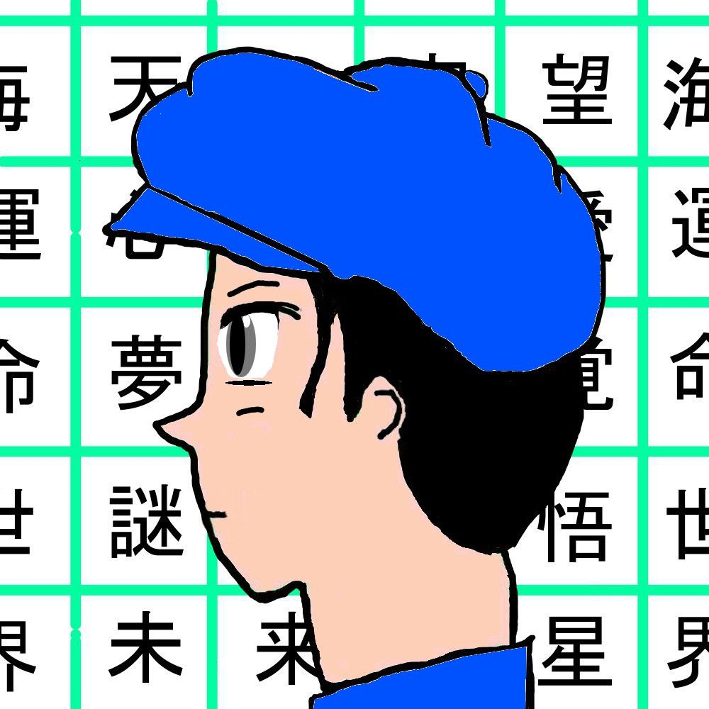

| 天使達、現る デイズ・オブ・フューチャー・パスト | |
| 小椋 祐介 | |
| omelet books (2014) | |
天使達、現る
小椋 祐介
オムレツ出版
貴方が悲しみに暮れる時
手を差し延べる者は
現れないだろう
しかし、まだやれる事はある
目次
――木漏れ日の光が柔らかく差し込む午後。
ガラス張りの壁に囲まれたカフェの一室に大柄で優しそうな男性が席に着いている。
向かいの席には端正な顔立ちの若い女性が座り男性の話を熱心に聞いている。
「私の事でお話出来る様な事は余りないと思いますが......」 男性が静かに切り出す。
「今の貴方に関心を寄せる人は多いと思います」
「普段通りの貴方で良いのです。 友人と会話をする様なお気持ちで、お話頂ければ」
「そうですか......分かりました。 口下手なもので何からお話すれば良いのか」
少し間を空けて男性は話し出す。
「ただ、あの時一つだけ、はっきりと分かった事があります――」
夏の終わり頃。
月桃エイジ（９）は夏休みの宿題をやっとの事で終わらせた。
清々しい達成感に包まれるのだが、その後はする事が何も見つからない。
仕方がないので部屋で何度も読み返したマンガを読み漁る。
（やっぱ、ハニーマンはカッコいいなぁ。 どんな敵でも一撃で倒してしまうんだから最強のヒーローだよね）
（それに力は無いけど動きが速いってのが良いんだよ）
リビングから母親の甲高い声がする。
「エイジ！宿題終わったんなら家にいつまでも居ないで外で遊んで来なさい！掃除が出来ないでしょ！」
「え、はーい」
（お母さんはいつも怒っている。それに夜はお父さんといつもケンカをしてる。ドコの家もそうなのかな）
エイジはヒーローカードを持って飛び出すように玄関を出て公園に行く。
この日の午後はいつもより気温が高く、やはり公園には誰も人が居ない。
仕方なくエイジは街で唯一のショッピングモールに行き、ＬＡＧＯブロックのヒーローシリーズを眺め続ける。
当然、彼には買う様なお金が無いので暫くしたらモールを出る。
クラスメイトの家を訪ねても旅行や習い事で誰も居ない。
少し涼しくなったのでエイジは再び公園に戻って来た。
公園は部活帰りの中学生の通り道になっており、心なしか昼間より賑やかに感じられる。
ベンチには初老の男性が座って新聞を読んでいる。
エイジはその隣のベンチに座り、一人でカードゲームを始めた。
子供の世界は凄く狭い。
エイジは９才にして『孤独』と向き合わなければならなかった。
彼には自分の居場所が無いのだ。
このまま成長していけば彼は暗い性格になり、暗い人生を歩む事になるだろう。
２０分程経った頃、隣に座っている男性が声を掛けて来た。
「そのカードゲーム、一人でやってて楽しいの？」
「......」
「ガムいるかい？」
「知らない人と話しちゃダメって言われてるから」
「そうか、なるほど。 私の名前はあきざくら、そこの水色の家に住んでいる。 よし！ これでもう知っている人になったね」
「そんなのずるい」
「大人は時々ずるいのさ」
「おじさんカードゲーム分かるの？」
「遊び方は分からないがハニーマン位は知っているよ。 ビー・キックがスゴイんだろ？」
「うん！ それに主人公が子供ってのがスゴいよね？ おじさんは好きなヒーローとかいるの？」
「そうだな、おじさんにとってのヒーローはやはりプリンスかな」
「ぷりんす？ すごい！ どんなワザがあるの？」
「そうだな、ボールをコントロールするのが上手いんだ。 ３年連続得点王にもなったんだぞ」
「それってスポーツ選手の事でしょ。 ヒーローじゃないよ」
「はは。 そうだな、空は飛べないかな」
「でも、ヒーローはもっと身近に居る人達かもしれないね」
「いないよ。 見た事ないもん」
「おじさんにも、その２枚のカード見せてくれるかな」
「いいよ」
「よく見てて。 赤のカードと緑のカードをこうやってピッタリと重ねる」
「で、こうやって指で弾くと」
「パシッ！」
重なったカードの隙間からコインが飛び出した！！
「スゴォイ！！ どうやったの？！」
「時々、魔法が使えるんだ。 小さな魔法をね」
「僕にも出来る？」
「もちろん出来る様になれるよ。 誰でも出来るんだ。 『魔法の鍵』を使えばね......君も持っているはずだよ」
「そんなの持ってないよ」
「忘れているだけだよ。 そのうち見つかる」
「ふーん......暗くなって来たからもう帰るね。 いつも公園に居るの？」
「時々ね」
「また来るね。 バイバイ！」
夕日が沈む方向にエイジは駆けて行く。
水仙ユウト（３２）は今日の仕事を定時で切り上げ、自宅のある駅に着いた。
表情には力が無く、歩調も遅い。
銀行ＡＴＭに行き、いつもの本屋でインテリアグッズのカタログを買う。
（あぁ、今日は何もする気が起きないな。 食事はファーストフードで済ませるか）
ハンバーガー店の席に着き、ぼんやりと携帯電話を眺める。
そして電話帳のメモリーを１つ消す。
ユウトは先週、ずっと好意を寄せていた女性に勇気を持ってデートに誘ったのだ。
だが、直ぐには返事は貰えず「じゃぁ、予定を確認したら連絡しますね」とだけ残し女性はその場を去った。
その後、返事が無いのでメッセージを何度も送ったのだが一度も返信は来ない。
（音信不通なんて断られるより辛いな。 あぁ、隣に座っているカップルが羨ましいよ）
これまでの人生を振り返るとユウトの人生は『失う事』ばかりが続くものであった。
元々は素直な性格で将来の夢はサッカー選手というような何処にでもいる無邪気な少年だった。
しかし環境が人格に影響すると云う学説は幼い頃のユウトにも当てはまるものであった。
家庭内の不仲により、家族の絆を失い、子供の成長に必要な愛情を失った。
その場合、友情を頼りにするしかないのだが、その親友と思っていた者達にも裏切られ友情を失った。
心の拠り所が無い少年は無気力で自己防衛に徹する事になる。
次第に学校の成績も悪くなり、不良を気取った少年達と遊ぶようになる。
だが、その彼等でさえ、心配してくれる家族や友人達が居ると分かると、ユウトは少年達との付き合いを止める。
その後、やる気の無い無名大学を出て、時代遅れの会社に就職し『自分探し』と言っては転職を繰り返してきた。
今は音楽配信の企業に勤めてはいるが実際は末端の営業活動だ。
唯一、幸運だったのはユウトは容姿が良く、言い寄ってくる女性が時々現れる事だ。
だがそれも、彼の無気力で無欲な面が出て来ると直ぐに関係が悪くなり、恋人を失ってしまう。
彼は今まで本当の恋をした事がないのだ。
このまま、彼は色の無い人生を歩む事になるのだろうか。
店員の雑な対応を特に気にする事もなく、力無く店を出る。
コンビニで明日の朝食を買いマンションまでの路地を歩く。
静かな住宅街を歩く。
いつの間にか、ユウトの後ろを髪の長い少年がピッタリと付いて来る。
ユウトが気づき、少年に声を掛ける。
「ん？ どうした？ 道に迷ったの？」
「あの、これ」
少年の手にある物を見て、ユウトはハッとして、鞄を開ける。
「それ俺の財布だ！ あっありがとう！ 何処で落としたんだろう？」
少年はユウトの反応を見てニコニコしている。
「そうだ。何かお礼をしなくちゃね。 何が良い？ そのカードもっと買ってあげようか？」
少年は少し驚いた様な表情をした。
「えっ？いいです。 何で？」
「財布を拾ってくれたお礼だよ。 良い事をしたんだから当然の事なんだよ。 そうか、急にカードが増えたら、お母さんに怒られちゃうのかな？ じゃあソコのコンビニでお菓子を買ってあげようか？」
しかし、少年は大人に叱られている子供の様に下を見てしまった。
「ボク、何にもいらない。 ......もう帰らなきゃ。 さようなら」
少年は走って行ってしまった。
「あっ」
ユウトは一人残され、こう思う。
（俺は今、あの子のプライドを傷つけてしまったのかもしれないな。 冷静に考えれば、あれ位の子供が見返りだけを求めて行動を起こしたなんて事ないよな。 なんか俺、ダサいな）
あっという間に少年の姿が見えなくなる。
（あの少年、誰かに似ているな、誰だったかな）
ユウトは少し立ち止まって考えた後、マンションの方へゆっくりと歩き出す。
風車ヤスヒト（５４）は新調したスーツを着て駅の隣にある高層ビルに入り込む。
ビルのトイレに入り鏡の中の自分を見つめる。
顔は緊張していて、なんとか笑顔を作り背筋を真直ぐに伸ばす。
（これで一体、何社目になるだろう。 もういい加減決まらないと後が無い）
鏡を見ながら最近まで勤めていた会社の事、家族の事を思い出していた。
ヤスヒトのこれまでの人生は常に『仕事』と共にあった。
仕事に打ち込む事こそが大切であり、妻や娘の為になると思う事で一生懸命に働き続けた。
仕事さえしっかりとしていれば、その他の幸せは自然と付いて来るモノだと疑わなかったのだ。
実際に、これまで上手くやって来れていたし、幸せだと感じていた。
しかし、２０年以上勤めてきた大型チェーン店のＣＤショップが閉店になると店長の彼は、職を失った。
音楽業界は今やネット配信が主流で、ＣＤショップが最先端でカッコイイとのイメージは過去のモノとなっていたのだ。
「今までずっと頑張って来たんだし、少し休んで良いのよ。 再就職はそれからでも良いのよ」と妻が声を掛けてくれる。
しかし、ヤスヒトはこれまでの殆どが仕事の事しか頭に無かった男だ。
私立に通う娘の為にも、直ぐにでも行動を起こすべきだと決心した。
だが、予想していた以上に再就職は難しく、世間の風当たりは相当に強かった。
景気が良かった時代とは全く違うと身に沁みて感じる事となった。
面接官は自分の娘と年齢が余り変わらない者もいる。
初対面の若者達に自分の経歴や仕事観を一生懸命説明する事に、彼のプライドと心はボロボロになっていた。
（就職活動をしている今の学生達はこんなにも大変な思いをして来たのか）
ヤスヒトは背筋を伸ばし面接室の部屋をノックする。
「失礼します」
部屋の中には３０代位の容姿の良い男性と４０代位の小柄な男性が座っている。
「では、お掛け下さい」と年配の方の面接官が声を掛ける。
「早速ですが、当社への志望動機とご自身の今後の展望等をお聞かせ下さい」と若い面接官が切り出す。
「はい、私は長年ＣＤショップの店長を勤めて来まして、音楽業界の流通については熟知しております。 御社の営業に役立てる事、活かせる事が多くあると確信しています。 将来的にはマーケットに関して指導出来る立場になれる様に勤めていきたいと感じております」
「しかし、風車さんもご存知でしょうけど音楽業界の営業はＣＤショップの時代とは随分と変わりました。 ウチの営業先は先ず、直接音楽レーベルに行きます。ソコで新作を提供してもらい、ドラマや映画の製作会社に売り込むＢｔｏＢの仕事です。 素人相手の営業とはかなり違いますよ、出来ますか？」 年配の方の面接官が冷たく言い放ち窓の外を見る。
「はい、日本のメジャーアーティストは殆ど調べておりますし、インディーズで活躍しているバンド等もチェックをしております。 今の顧客にどんな音楽が受け入れられているかも常に意識しております。 この経験が御社で活かせると自信を持っております」
「そうですか、大体分かりました。 では結果は明日までに電話にて連絡致します。 本日は有難うございました」
「どうぞ宜しくお願い致します。 では、失礼致します」
面接室を出て、ビルを出るとヤスヒトは駅前の蕎麦屋に入った。
（今の面接、大丈夫だったのだろうか。 来月の娘の誕生日迄には絶対決めたい）
面接室では先程の若い方の面接官が一人、片付けをしている。
彼はヤスヒトの履歴書にもう一度、目を通すとハッと表情を変える。
ヤスヒトは自宅に着き玄関のドアを開けるとほっと息をついた。
妻が優しく声を掛ける。
ヤスヒトは妻の穏やかな表情を見て、期待に応えられない自分が情けなく感じる。
明日の午後５時迄に連絡が来なければ不採用との事だ。
連日の就職活動で疲れ切ってしまったヤスヒトは携帯を握り締めてベットの上に横になった。
目を閉じたヤスヒトは自分の無力さを痛感し、涙を流した。
翌朝、ヤスヒトは目が覚めると直ぐに携帯の履歴を確認するが、着信は無い。
早くから妻はパートに出かけ、娘が学校に行くのを見届けると、一人朝食のパンを噛み締める。
（自分は社会から取り残されてしまったみたいだ。 これは長い夢の中で目が覚めていないだけなのかもしれない）
そう思う様になっていた。
家の掃除をしながらヤスヒトは思いつめた顔でこう思う。
（段々と家族との会話が少なくなっている。 俺の人生で何が間違っていたのだ。 文句も言わず仕事一本で頑張って来たじゃないか。 俺の何が悪い。 世の中は公平には出来ていないのか。 テレビで出てはしゃいでる、あんなタレント達が幸せそうにしていて、何故ウチだけこんな目に遭わなければいけないのか）
そう考えても何も始まらないと分かっているのだが時々、ヤスヒトは何かに当たっては気を落ち着かせるしかないのだ。
午後５時を過ぎても電話が鳴らないのでヤスヒトは肩を落とした。 （家族の為にも、まだ諦める訳にはいかない）
そして窓の外をぼんやりと眺めていると玄関のチャイムが鳴り出した。
（この際、セールスでも構わないから誰かと話でもしよう。 それで気が少しは紛れるかもしれない）
「はい、どなた？」
「私、ナイルの水仙と申します」
（あぁ、誰か通販サイトで注文したんだな）
「印鑑ですね？ ちょっと待ってて下さいね。 直ぐ玄関に行きます」
ユウトはヤスヒトが出て来たら昨日の面接が不採用である事を伝える気でいた。
なんとヤスヒトは履歴書の連絡先の欄を空白のまま出してしまっていたのだ。
ユウトは手紙では日数を要する為、悪い知らせであっても直ぐに伝える事がヤスヒトの為にもなると考えていた。
「お待たせしました。 あっ！」
「昨日、面接を担当させて頂きました、水仙です」
ヤスヒトは驚いて何も言えない。 その表情を見て、ユウトはフッと髪の長い少年との事を思い出した。
「これから是非、風車さんと一緒に、仕事をさせて頂ければと思っております」
少し間を空けてヤスヒトは気を持ち直す。
「こっこちらこそ！！ でも何故、わざわざ私の自宅までおいでに？！」
ユウトは笑顔で応える。
「連絡先が空欄でしたよ」
ヤスヒトの顔から笑顔がこぼれる。
ヤスヒトは、門の前で涙を浮かべて微笑む妻の姿にようやく気が付いた。
秋桜マコト（６５）はラッピングされた大きな箱を抱えてショッピングモールを出た。
毎年、夏に孫が遊びに来るのが恒例となっていて、それが独り身のマコトには唯一の楽しみであった。
事前にＮＥＴを使って１０才位の男の子に人気のオモチャを調らべＬＡＧＯの宇宙シリーズを購入した。
ＬＡＧＯブロックは高価なオモチャとして有名で、購入者も富裕層ばかりが目立つ。
マコトは現役の頃は家具屋の修理担当を３０年以上に渡って勤めた。
薄給ではあったが仕事に誇りを持っていたし、顧客からの評判は大変良く社内でも頼れる男として名が通っていた。
彼の一人息子は有名大学を出て一流企業に就職し、若くして家庭を築いた自慢の息子だ。
マコトの人生は不幸や孤独とは無縁の順風満帆な人生を送っていたのだ。
だが定年を迎え家庭に入ると、長年連れ添ったはずの妻との時間の過ごし方が分からなくなってしまった。
次第に妻は一人で過ごしたいと思うようになり、程なくして故郷に戻っていった。
それからは連絡すら取る事もなくなり、妻とは疎遠となってしまった。
いつも大勢の人に囲まれていたマコトは一人で居る事は無駄な時間であり、忙しい事が『正義』だと信じていた。
しかし、現実はそうではなかった。
職場を離れた後は連絡をくれる者は殆ど居らず、一番大切にしなければならない妻との関係すら築けていなかったのだ。
今となっては一人、公園と家の周りを散歩する事だけが楽しみとなっている。
家に戻ったマコトは夕飯の野菜炒めを作り、楽しみの一つの日本酒を食卓に並べ席に着く。
ソファに置いた孫へのプレゼントを眺めては、年に一度の楽しみである孫との再会を思い浮かべる。
何度も練習を重ね、上達した手品にも自信が持てる様になった。
食事を終え、片付けをしている頃、電話が鳴った。
「あっ父さん？」
「ああ。 久しぶりだな。 元気でやっているか？ 仕事の方はどうだ？」
「順調だよ。 景気も良くなって来たしね」
「で、今日はどうした？ 来週の事か？」
「そうなんだ。 なんか今度の連休は沖縄に行きたいって言う事を聞かないんだ。 宿題を全て終わらせたらお願いを一つ聞いてあげるって約束したもんだから。 先から泣き出しで困っているんだ」
「そうか。 暑い時に暑い所に行きたいもんなのか」
「うん、そうみたい。 子供の考える事だからよく分からないけど友達にお土産買って来るって言ってしまったみたい」
「分かった。 今年は沖縄に行って来なさい。 しかし余り甘やかすもんじゃないぞ」
「ありがとう。 父さん、分かっているよ」
「ああ、そうだ。 毎年のプレゼントはそっちに贈るとするよ」
「態々用意しなくても良いのに......あ！ゴメン、花火が始まるってうるさいから切るよ。 また電話する」
電話が切れ、マコトはソファにもたれ掛かりそのまま眠ってしまう。
翌朝、日差しが暑い中マコトは駅ビルに行き、プレゼントを宅急便で送る手続きを終えた。
（孫と次に会えるのは今度いつになるだろう。 もしかしたら来年も来ないかもしれない）
昨日、酒を飲みソファで眠ってしまった為少し体調が良くなかった。
マコトは気晴らしに昔よく通っていた銭湯に行く事にした。
朝の時間ホームは人で込み合い、まともに通行するのも大変な位だ。
『間もなく２番線に特急電車が通過いたします。 危ないですから黄色い線の内側を出ない様にお願い致します』
マコトは急ぐ事は無いのだが大勢の人を避けながら歩けなかった為、ホームの端をゆっくり歩いていた。
「ドサッ！！」
何かがぶつかる音がした。
マコトが周りを見渡すと自分が線路の上に落ちている事に気が付いた！
スポーツバッグを持った少年がマコトを見つめ動揺している！
直ぐに周りの乗客も気付き始めた。
駅員は急いで緊急停車のレバーを引きに走る！
しかし、列車のライトが光ったのが誰の目にも確認が出来る所まで来ていた！
異様に静まり返ったホームから、スーツを着た一人の大柄な男が飛び降りた。
「お父さん！早く起き上がって！」
しかしマコトは足を挫いて上手く立ち上がれない！
「ホームに手を掛けて！押し上げるから！」
男は渾身の力でマコトをホームに押し上げた！
『ギュイイイイイイイイイイイ！！！！』
列車がブレーキを掛けるがそこまで迫っている！
男は横を見て......諦めた。
『イイイイイイイ！！！！』
突然、男の大きな体がふわりと浮き始める！
「おっさん！諦めんな！！！！手を貸せお前ら！！！！」
作業着を着た男達が一斉に男の体を掴み上げる！！
花梨サツキ（２７）は会社を出てタクシーに乗り込んだ。
そして並木道の綺麗な緑を見ながら母親の事を思い出していた。
昨晩、些細な事で電話口の母親と口論になってしまったのだ。
『家族』とは一緒に居る事が当たり前で、それがお互いの為にもなり幸せの絶対条件という認識を多くの人が持っている。
だが、現実には自らの子供に愛情を見出せない者もいたり、また親や兄弟を憎む者もいる。
サツキは子供の頃から母親とは相性が悪かったのだ。 最悪であった。
だが、家族という括りの中、お互いの愛憎に悩みながらも、何とかこれまでやって来たのだ。
サツキは、そしてサツキの母親は本当に幸せなのだろうか？
サツキは答えを出していたのだが決断出来ていなかった。
タクシーは駅前の全面ガラス張りのカフェの前に着いた。
今朝、この駅のホームで事故があり、そこで一人の男性に注目が集まったのだ。
サツキの仕事はＷＥＢ専門のジャーナリストである。
事故直後、直ぐに男性の事を調べ上げ、勤務先に連絡し本人と直接コンタクトを取る事に成功したのだ。
待ち合わせのカフェの一室に入ると既に大柄な男性が席に着いていた。
「失礼致します。 私がお電話致しました、セント・アースの花梨サツキと申します。 本日は宜しくお願い致します」
余りにも綺麗な女性が入って来たからなのか、男性は緊張しながら立ち上がった。
「どっどうも、風車です――」
――木漏れ日の光が柔らかく差し込む午後。
「確かな事ですか？」
「はい。 所で花梨さんにとって英雄は誰かいますか？」
「え？勿論、今日の英雄は風車さんです。 早ければ今夜の記事にも取り上げられるでしょう」
「いえ......そうではなくて花梨さんご自身にとっての英雄の事です」
「私の......ですか。 そうですね。 子供の頃はいた様な気がしますが」
「そうですか。 私は今朝、それが何なのか、はっきりと分かったんです」
「英雄についてですね？」
「はい。 偶然だったのです。 偶然あの時、私はあの場所に居たのです。 偶然あの時、勇気が出たのです。 人は勇気が出ない時もある。 私は昨日、ある若者と出会い、彼の行動に心を動かされました。 彼の得にはならない事です。 人は誰かがとった行動の中に自分の姿を見るのです。 諦めない姿。 一人で世界と戦っている姿。 自分を信じる姿。 どうしようもない絶望に立ち向かう時、恐れを忘れる時、貴方の中に英雄が居ることに、貴方は気づくのです」
サツキはヤスヒトの瞳に映る自分の姿を見ている。
*
あとがき
著者情報

小椋 祐介
お読みになってくださって、ありがとうございます。
自然科学の研究では『バタフライ・エフェクト』という考え方があります。 これは、南米での蝶の羽ばたきの風が中米に到達する頃には台風になっている、という考え方です。
私達、一人一人の僅かな行動の違いが、やがて大きな結果を生み出すかもしれません。
だとすれば、その結果は素晴らしいものであって欲しいと思います。
私は小説や文学作品において、人間のマイナス面を描く事で、芸術性を高めようという事はしたいとは思いません。 やはり人は、人間のプラス面を見たいのではないかと思います。 それには必ずしもリアルである必要はないと思います。
私は、『こういう人達がいたら良いな』と思える様な作品を描いていきたいと思います。
それでは、今日はこんな所で。